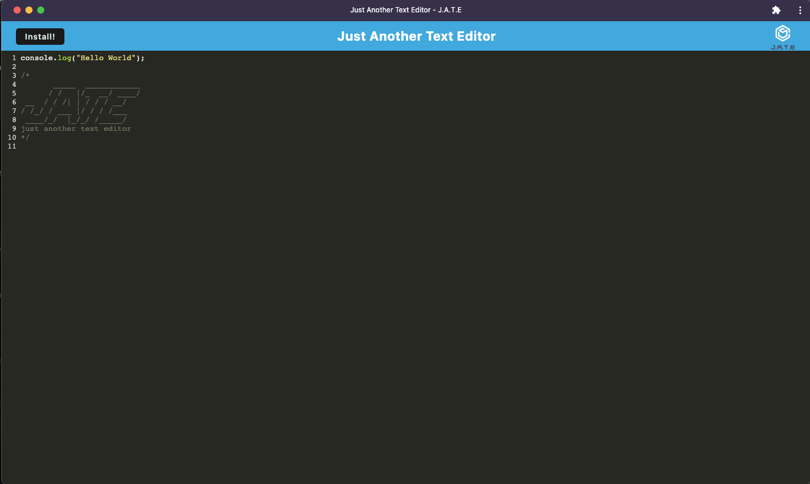

Projects
This page features highlight projects I have been developing since June of 2022. If you would like to see more of my work that is in progress, or peak behind the scenes, please check out all my repositories on GitHub! There you will also find my first Gist.

The Wandering Comma
A developer's work is never done -- especially not when it comes to learning new things. I wanted a place where I could make posts about what I am learning, thoughts on coding, etc. The blog needed to exercise and hone my skills in creating a full stack application. This application allows for users to sign up, login in, and create and edit posts and comments. This application encrypts passwords and stores them hashed securely in the database. I plan to add more features to this application over time, like the ability to add photos. Watch for more to come!
Click here to view the Wandering Comma repo in GitHub PWA Text Editor
A full stack PWA text editor that creates an easy place to keep coding notes or practice functions. It can be used in the browser and also saved to your local device. It uses Idb and/or localStorage to keep the notes you input.
Click here to view the app on GitHubHome Party
A full-stack website built collaboratively. Home Party is a place to invite your family and friends; a place where you can keep track of all your favorite homes... and everything you could put in them.
It was an awesome experience to have built a full stack website from conception to end product. I and my team learned so much and got so much on the ground experience navigating complex routes and inter-connected table structures. We learned about the tech "Node Mailer" as well as deepened our experience with Express, Sequelize, MySQL2, Handlebars, Bootstrap, CSS, Javascript, and HTML5.
Click here to view the Home Party repo on GitHub
A Night In
I worked with a team of two other awesome coders to learn about APIs and generating HTML. We wanted to build a site where searching for ideas for a night in would be fun and more focused than doing numerous searches in different browser windows for food, drinks, and entertainment.
For my teammates and I, it was an awesome experience to learn about APIs and fetch commands. Our skills were honed and tested. Learn more at our GitHub repo!
Click here to view the Night In repo on GitHub
About Me
Fresh, motivated web developer who can hold his own on the frontend, backend, or both. I have a track record of 12 years of top-notch soft skills and the ability to learn, pivot, and deliver clean, organized, efficient code in a short amount of time.
Please reach out if you have questions or comments!
Click here to view my resume.Bubble World
An Experiment in understanding and developing a social media app. Bubble World is a back end application that utilizes MongoDB, Mongoose, and Express to explore the possiblities of social media.
The demo video showcases the get, post, put, and delete routes for all the models.
Click here to view the Bubble World repo on GitHub